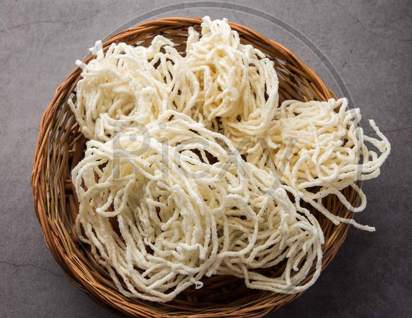

Kurdai

Kurdai is a traditional Maharashtrian sun-dried snack made from wheat
dough, shaped into coils or spirals, dried, and deep-fried until crisp.
Served as a crunchy accompaniment to meals, especially in summer.
Ingredients to make
- 2 cups wheat flour
- Water as needed for dough and boiling
- 1 teaspoon salt
- 1 teaspoon oil (for dough)
- Optional: cumin seeds or ajwain (carom seeds)
- Oil for deep frying
Steps to make
- Mix wheat flour, salt, and oil. Add water to make a stiff dough.
- Divide dough into balls and steam or boil until cooked.
- Knead cooked dough until smooth.
-
Extrude dough through a sev maker or press into spiral shapes on a cloth
or sheet.
- Sun-dry for 2–3 days until crisp.
- Store dried kurdai in an airtight container.
- Deep fry kurdai in hot oil until puffed and golden.
- Serve as a crunchy snack or side.
Home